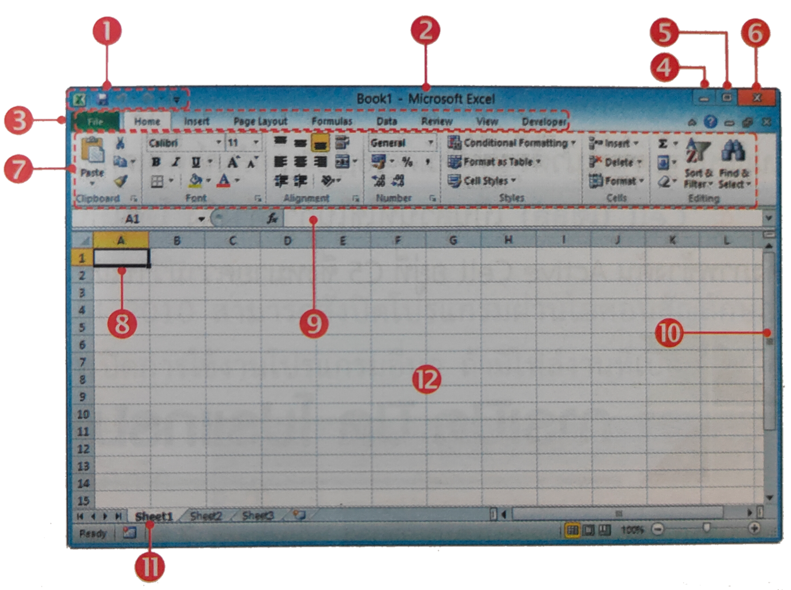

หน่วยที่ 5 การใช้โปรแกรมตารางงาน Microsoft Excel 2010



1. Quick Access Toolbar (แถบเครื่องมือด่วน) เป็นปุ่ม คำสั่งด่วนและคำสั่งสำคัญๆ ที่ใช้เป็นประจำ ผู้ใช้สามารถเพิ่ม หรือลดปุ่มคำสั่งได้ตามต้องการ
2. Title Bar (แถบชื่อเรื่อง) เป็นส่วนแสดงชื่อโปรแกรม ชื่อสมุดงานและประเภทของ สมุดงาน
3. Menu Bar (แถบเมนู) เป็นส่วนแสดงกลุ่มของชุดคำสั่ง ต่างๆ ในการทางานของโปรแกรม Microsoft Excel 2010 ประกอบด้วยแท็บ 9 แท็บ คือ File, Home, Insert, Page Layout, Formulas, Data, Review, View และ Developer
4. Minimize Button ปุ่มสำหรับย่อหน้าจอ
5. Restore Down & Maximize Button ปุ่มสำหรับย่อ-ขยาย
6. Close Button ปุ่มสำหรับปิดโปรแกรม
7. Ribbon เป็นชุดของกลุ่มคำสั่งและปุ่มเครื่องมือต่างๆ โดยจัดเป็นกลุ่มตามการใช้งานให้ สะดวกขึ้น
8. Active Cell (เซลล์ที่ทำงานอยู่) เป็นส่วนแสดงการทำงานในขณะนั้นว่าทำงานอยู่ที่เซลล์ใด
9. Formula Bar (แถบสูตรคำนวณ) เป็นส่วนแสดงสูตรในการคำนวณ
10. Scroll Bar (แถบเลื่อน) เป็นส่วนที่ใช้เลื่อนหน้าจอขึ้น-ลง หรือเลื่อนไปซ้าย-ขวาเพื่อแทรกไปดูข้อมูลบนแผ่นงาน
11. Sheet Tab เป็นส่วนแสดงชื่อของแผ่นงานที่ใช้งานอยู่ในสมุดงาน
12. Worksheet Area เป็นส่วนแสดงพื้นที่ในการทำงานต่างๆ ของแผ่นงาน ที่สร้างลงไปในช่อง ตารางเล็กๆ เรียกว่าเซลล์ (Cell)
โปรแกรมตารางงาน คือโปรแกรมประเภทสเปรทชีต ซึ่งโปรแกรมที่นิยมใช้กันคือทัวไปคือ โปรแกรม MICROSOFT EXCEL เพื่อทําการสร้างเวิร์กชีตต่าง ๆ ขึ้นมาใช้งานนั้น เรามีความจําเป็ นต้องรู้ถึง วิธีการเรียกใช้งานโปรแกรม ส่วนประกอบของหน้าจอโปรแกรม การทํางานกับเวิร์กบุ๊ก และเวิร์กชีต การใช้งานเมนูและแถบเครื่องมือ ตลอดจนการออกจาก โปรแกรม MICROSOFT EXCEL อย่างถูกวิธี ทํา ให้ผู้ใช้งาน สามารถใช้งานโปรแกรม MICROSOFT EXCEL ได้อย่างมีประสิทธิภาพ
โปรแกรม EXCEL มีคุณสมบัติ ดังต่อไปนี้
· สร้างและแสดงรายงานของข้อมูล ตัวอักษร และตัวเลข โดยมีความสามารถในการ
จัดรูปแบบให้สวยงามน่าอ่าน เช่น การกำหนดสีพื้น การใส่แรเงา การกำหนดลักษณะและสีของ
เส้นตาราง การจัดวางตำแหน่งของตัวอักษร การกำหนดรูปแบบและสีตัวอักษร เป็นต้น
· อำนวยความสะดวกในด้านการคำนวณต่าง ๆ เช่น การบวก ลบ คูณ หารตัวเลข
และยังมีฟังก์ชั่นที่ใช้ในการคำนวณอีกมากมาย เข่น การหาผลรวมของตัวเลขจำนวนมาก การหา
ค่าทางสถิติและการเงิน การหาผลลัพธ์ของโจทย์ทางคณิตศาสตร์ เป็นต้น
· สร้างแผนภูมิ (CHART) ในรูปแบบต่าง ๆ เพื่อใช้ในการแสดงและการเปรียบเทียบ
ข้อมูลได้หลายรูปแบบ เช่น แผนภูมิคอลัมน์ (COLUMN CHART หรือBAR CHART) แผนภูมิเส้น (LINE
CHART) แผนภูมิวงกลม (PIE CHART) ฯลฯ
· มีระบบขอความช่วยเหลือ (HELP) ที่จะคอยช่วยให้คำแนะนำ ช่วยให้ผู้ใช้สามารถ
ทำงานได้อย่างสะดวกและรวดเร็ว เช่น หากเกิดปัญหาเกี่ยวกับการใช้งานโปรแกรม หรือสงสัย
เกี่ยวกับวิธีการใช้งาน แทนที่จะต้องเปิดหาในหนังสือคู่มือการใช้งานของโปรแกรม ก็สามารถขอ
ความช่วยเหลือจากโปรแกรมได้ทันที
· มีความสามารถในการค้นหาและแทนที่ข้อมูล โดยโปรแกรมจะต้องมี
ความสามารถในการค้นหาและแทนที่ข้อมูล เพื่อทำการแก้ไขหรือทำการแทนที่ข้อมูลได้สะดวก
และรวดเร็ว
1. คลิกที่ปุ่ม START
2. เลื่อนเมาส์ไปชี้คำสั่ง ALL PROGRAM
3. เลื่อนเมาส์ไปที่ MICROSOFT OFFICE
4. เลื่อนเมาส์ไปที่ MICROSOFT OFFICE EXCEL คลิก
แบบทดสอบหลังเรียน